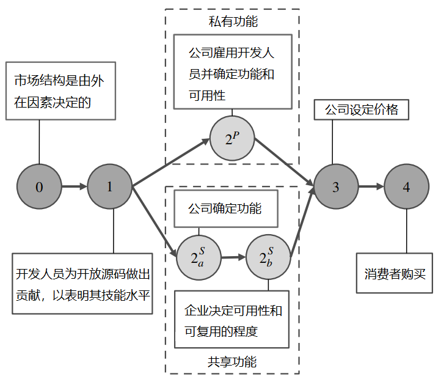
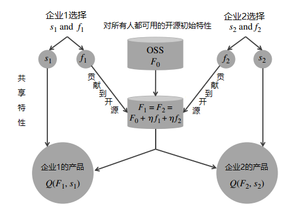

<!DOCTYPE html>
<html lang="en">
  <head>
    <meta charset="utf-8" />
    <meta name="viewport" content="width=device-width, initial-scale=1.0, maximum-scale=1.0, user-scalable=no" />

    <title>reveal-md</title>
    <link rel="shortcut icon" href="./favicon.ico" />
    <link rel="stylesheet" href="./dist/reset.css" />
    <link rel="stylesheet" href="./dist/reveal.css" />
    <link rel="stylesheet" href="./dist/theme/black.css" id="theme" />
    <link rel="stylesheet" href="./css/highlight/base16/zenburn.css" />


  </head>
  <body>
    <div class="reveal">
      <div class="slides"><section  data-markdown><script type="text/template"># 企业之间基于开源软件的竞争与合作

## 论文来源

### 《Competitive Strategy for Open Source Software》

* Vineet Kumar ：哈佛大学哈佛商学院，波士顿，马萨诸塞州，02163，vkumar@hbs.edu
* Brett R. Gordon ：哥伦比亚大学商学院，纽约，纽约，10027，brgordon@columbia.edu
* Kannan Srinivasan ：卡内基梅隆大学泰珀商学院，宾夕法尼亚州匹兹堡，15213，kannans@andrew.cmu.edu。

</script></section><section  data-markdown><script type="text/template">
## 论文摘要

商业开源软件（COSS）产品 —— 基于公开源代码的私人开发的软件 —— 代表了一个快速增长、价值数十亿美元的市场。开源软件市场竞争的一个独特方面是，许多开源许可证要求企业公开某些增强功能，这就刺激了企业搭上他人贡献的便车。这种做法提出了一些令人费解的问题。首先，如果竞争者可以免费使用这些贡献，那么企业为什么要进一步开发产品？第二，一个基于免费搭车的市场如何产生高质量的产品？第三，从公共政策的角度来看，强制分享改进的做法是提高还是降低了消费者剩余和行业利润？

为了解决这些问题，我们建立了一个开源软件公司之间的双边（two-sided）竞争模型。我们的模型包括：（1）两家公司在一个垂直差异化的市场中竞争，其中产品质量是公开与私有成分的混合；（2）一个开发者市场，公司在观察到他们对开源贡献的信号后雇用他们。我们证明，在均衡中支持搭便车行为，强制分享的设置可以产生高质量的产品，而且搭便车实际上可以增加消费者剩余和行业利润。

</script></section><section  data-markdown><script type="text/template">
## 模型一：私人和共享特征市场



</script></section><section  data-markdown><script type="text/template">
## 模型二（1）：产品市场——私有特性开发模式


</script></section><section  data-markdown><script type="text/template">
## 模型二（2）：产品市场——共享特性开发模式



</script></section><section  data-markdown><script type="text/template">
## 模型的结论

* 在企业的竞争市场中
    * 强制分享的设置（类似于GPL的授权协议）可以产生高质量的产品
    * 积极贡献更多开源的企业，获得更加的竞争力
    * 在均衡中支持搭便车的行为，搭便车实际上可以增加消费者剩余与行业利润
</script></section><section  data-markdown><script type="text/template"></script></section></div>
    </div>

    <script src="./dist/reveal.js"></script>

    <script src="./plugin/markdown/markdown.js"></script>
    <script src="./plugin/highlight/highlight.js"></script>
    <script src="./plugin/zoom/zoom.js"></script>
    <script src="./plugin/notes/notes.js"></script>
    <script src="./plugin/math/math.js"></script>
    <script>
      function extend() {
        var target = {};
        for (var i = 0; i < arguments.length; i++) {
          var source = arguments[i];
          for (var key in source) {
            if (source.hasOwnProperty(key)) {
              target[key] = source[key];
            }
          }
        }
        return target;
      }

      // default options to init reveal.js
      var defaultOptions = {
        controls: true,
        progress: true,
        history: true,
        center: true,
        transition: 'default', // none/fade/slide/convex/concave/zoom
        slideNumber: true,
        plugins: [
          RevealMarkdown,
          RevealHighlight,
          RevealZoom,
          RevealNotes,
          RevealMath
        ]
      };

      // options from URL query string
      var queryOptions = Reveal().getQueryHash() || {};

      var options = extend(defaultOptions, {}, queryOptions);
    </script>

    <script src="./_assets/./assets/echarts.min.js"></script>

    <script>
      Reveal.initialize(options);
    </script>
  </body>
</html>
